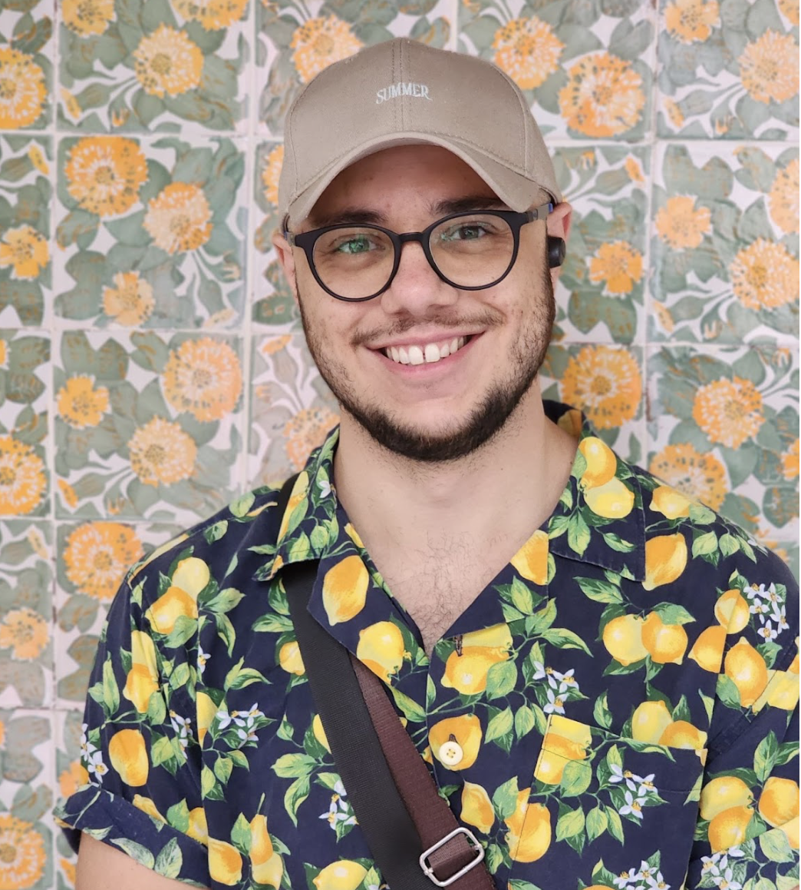
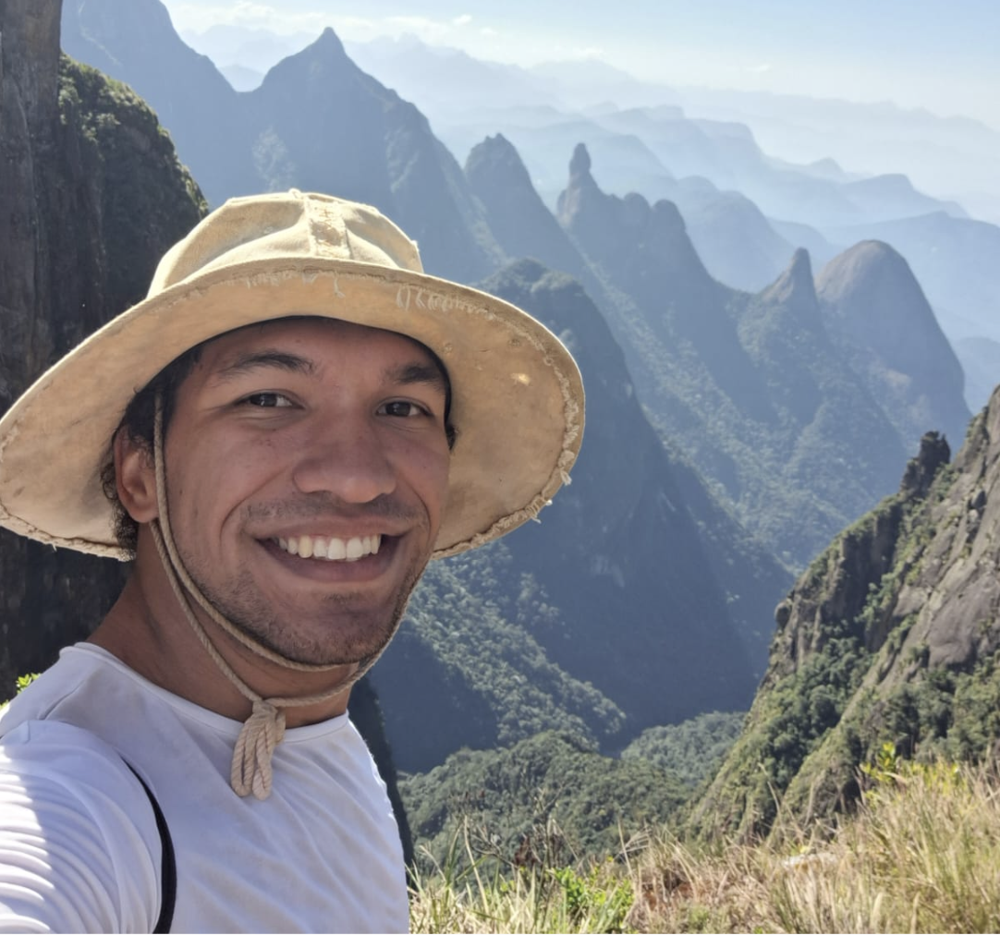
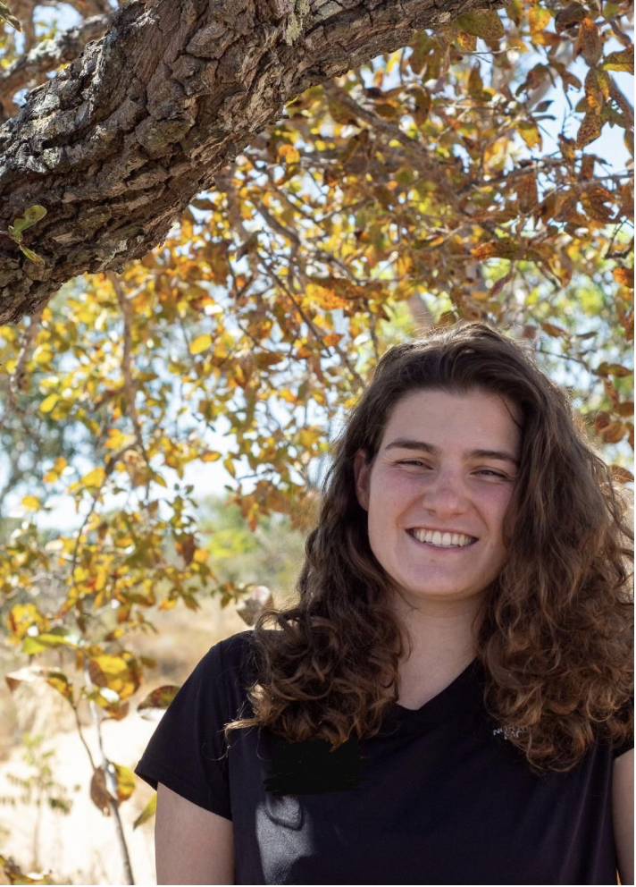
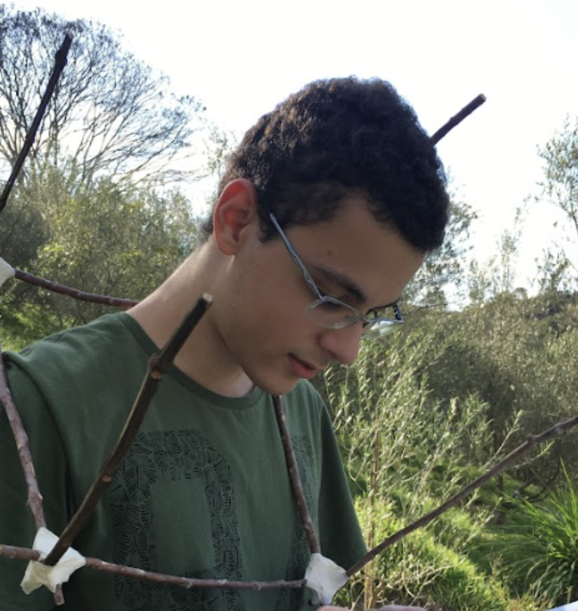
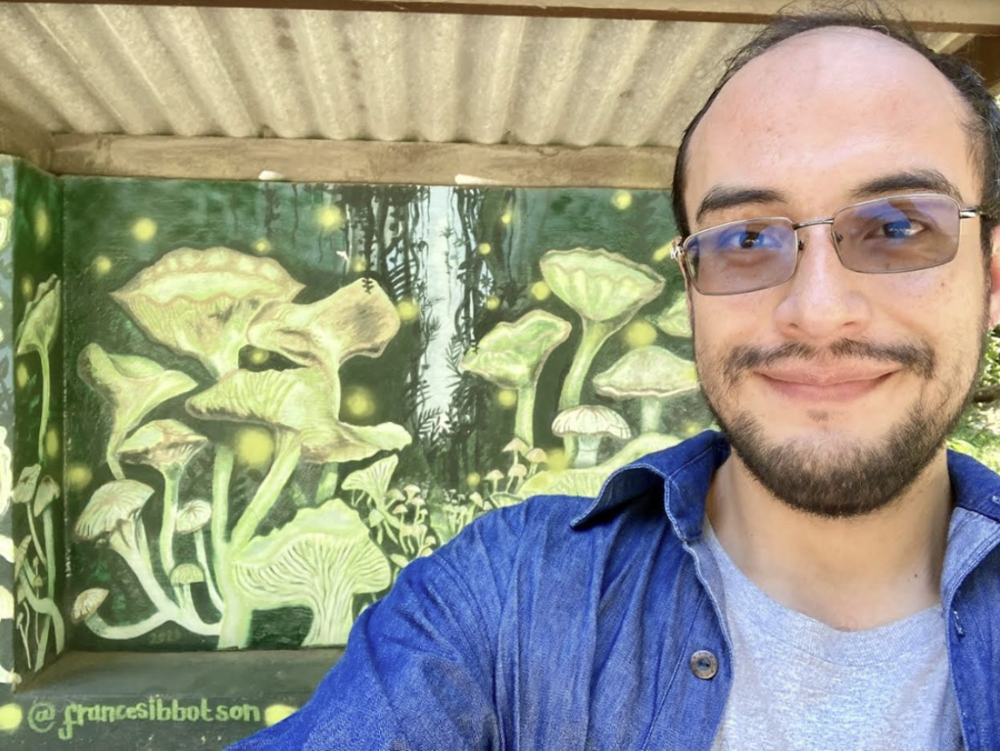

3 Organização
A EcoEscola só existe graças ao esforço coletivo e voluntário dos alunos da pós graduação em ecologia da Universidade de São Paulo. As três semanas de curso são resultado de um ano inteiro de programação realizada pela comissão da EcoEscola. Nesta 6ª edição o curso contou com 10 integrantes.
Arthur Lupinetti
Doutorando e mestre em Ecologia no Laboratório de Ecologia e Conservação da USP, graduado em Ciências Biológicas e Engenharia Ambiental e Urbana na UFABC
“Participei como aluno da quarta EcoEscola, o que foi um grande incentivo para ingressar no mestrado em ecologia. Quando a organização da quinta edição iniciou, não tive duvida em participar da comissão”
Bianca Neves
Mestranda em Ecologia no Laboratório de Ecologia de Paisagem e Conservação na USP, fez graduação em Ciências Biológicas na UFES
“Conheci o projeto na minha semana inaugural do mestrado e logo quis fazer parte dessa proposta de utilizar uma abordagem ativa de conhecimento para transformar um curto período de tempo em aprendizado e amadurecimento intenso na trajetória acadêmica”
 Douglas Cirino
Mestre e Doutorando no LEPaC (Lab. de Ecologia da Paisagem e Conservação). Bacharel em Ciência e Tecnologia e Bacharel em Biologia pela UFABC
“Eu participei da EcoEscola como aluno quando estava na graduação e foi uma das melhores experiências para minha carreira. Já estive em outra comissão de organização e acho que o projeto merece continuar oferecendo a oportunidade que tive para mais pessoas!”
 Gabriel Garcia
Doutorando em ecologia pela USP. Mestre em Ecologia pela UnB e Bacharel em Biologia pela UFRN
Participo da EcoEscola porque acredito ser uma oportunidade de unir minha paixão pela ecologia com o desejo de ensinar. Valorizo poder contribuir para a formação dos estudantes, algo que vivenciei em edições anteriores do evento, onde pude ensinar e aprender com pessoas de todo o país, enriquecendo meus próprios conhecimentos.
Gabriel Nakamura
Pós-doutorando no Laboratório de Macroevolução e Macroecologia - USP
Sou licenciado em Biologia, e o ensino sempre ocupou uma parte importante e prazerosa na minha carreira acadêmica. Vejo na EcoEscola uma oportunidade para que eu possa contribuir na formação de estudantes em Ecologia.
 Gabriela Longo
Mestranda do Programa Interunidades no Ensino de Ciências (PIEC-USP).
Gosto muito de projetos de extensão universitária, e acredito que o ensino, a pesquisa e a extensão de fato só fazem sentido se caminharem juntos. Vejo na EcoEscola uma oportunidade de pensar e atuar nessas três esferas.
Lucas Freitas
Mestre e atual Doutorando em Ecologia no Laboratório de Ecologia Teórica USP
“Me interessei pelo projeto pelo seu caráter de divulgação da Ecologia como ciência em seus mais diversos aspectos.”
 Matheus Pepe
Mestre em Ecologia no Laboratório de Ecologia de Florestas Tropicais.
Eu sempre gostei de fazer parte de vários projetos de extensão universitária no bacharelado. A EcoEscola foi mais uma oportunidade pra não só conseguir participar do meio universitário nesse quesito, mas também oferecer uma experiência legal para outros alunos de como a Ecologia é um campo extremamente enriquecedor.

Andres Arguelles
Pos-doutorando no LAGE-USP e doutorado em Ecologia na UNAM (México)
Estou interessado no projeto porque gosto de fazer ecologia e divulgação da ecologia de fungos. Achei muito interessante a dinâmica da EcoEscola, garantindo uma experiência incrível.